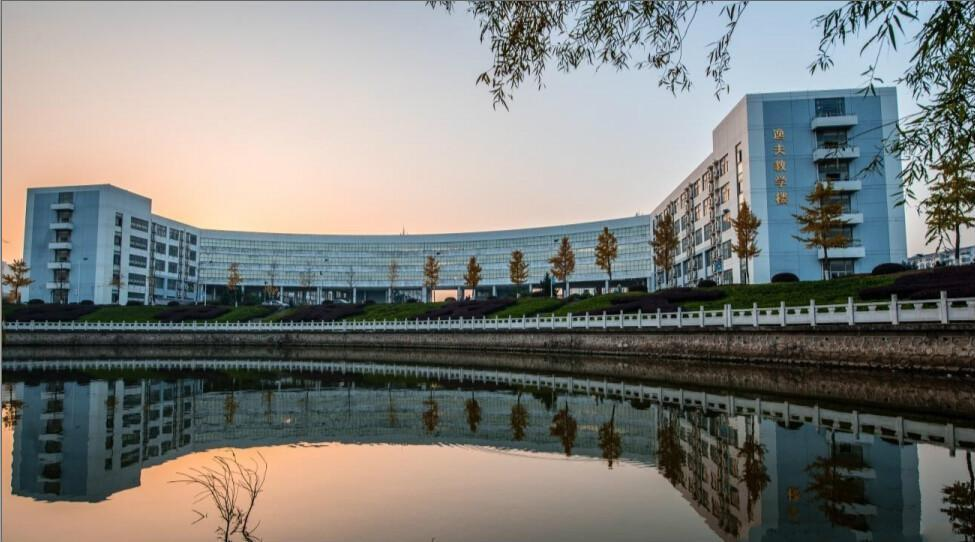
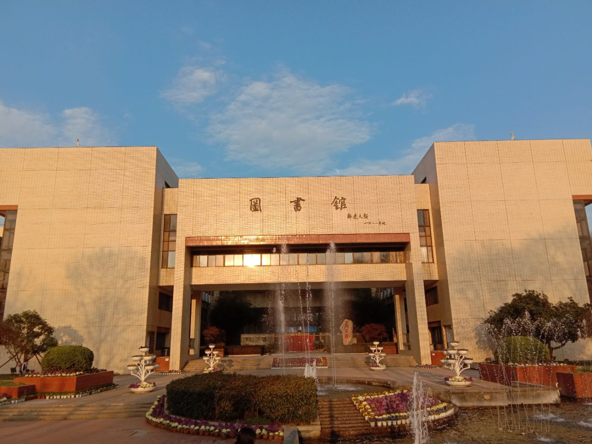

.jpg)
华中科技大学，简称华中大、华科大（HUST） ，位于湖北省武汉市，是由国务院教育行政部门主管，在医学的教育、医疗、科研和社会服务中接受国务院卫生主管部门的指导。是国家教育部直属重点综合性大学，国家“211工程”和“985工程”重点建设高校，首批国家“双一流”建设高校建设高校。
学校由原华中理工大学（前身为1952年国家筹办的华中工学院）、同济医科大学（前身为1907年德国埃里希·宝隆创办的德文医学堂）、武汉城市建设学院（前身为1952年12月创建的中南建筑工程学校）于2000年合并组建

华中科技大学始建于1953年，由多所学校合并组建而成。
校园占地面积7000多亩，有全日制学生5万余人。
学校校训：明德厚学 求是创新
• 国家“双一流”建设高校 2011年 “全国文明单位”称号 2013年6月 “全国绿化模范单位”的称号 2015年4月 “全国文明单位”称号 2018年7月 “2018年度全国创新创业典型经验高校”称号 2021年7月 获得全国学生运动会“校长杯”最高荣誉 2021年11月 第二届全球跨境电商创新创业大赛最佳组织奖 2023年2月 获湖北省“2022年度高校平安校园建设工作突出贡献集体” 2023年4月 在第三届湖北省高校教师教学创新大赛中获“优秀组织奖” 2024年1月 入选中央网信办、教育部评选的新一期一流网络安全学院建设示范项目 2025年5月 第三届全国文明校园
• 国家“985工程”重点建设高校
• 国家“211工程”重点建设高校
• 全国文明校园
截至2024年12月，学校47个硕士学位授权一级学科，46个博士学位授权一级学科，42个博士后科研流动站。现有一级学科国家重点学科7个，二级学科国家重点学科15个（内科学、外科学按三级计），国家重点（培育）学科7个。在教育部第四轮学科评估中，学校44个学科参评，全部上榜，其中机械工程、光学工程、生物医学工程、公共卫生与预防医学等4个学科进入A+，A类学科14个，B+及以上学科33个。9个学科入选国家第二轮“双一流”建设学科名单。学校有多个学科门类，以下是主要专业：
机械工程、光学工程、计算机科学与技术、电气工程、土木工程
数学、物理学、化学、生物学、统计学
临床医学、药学、护理学、公共卫生与预防医学
英语、汉语言文学、工商管理、法学、经济学
学校师资队伍强大，有专任教师4000余人。
其中包括：院士50余人，教授、副教授2000余人。
教师队伍既有资深教授，也有年轻的优秀学者。
1. 张明：院士，机械工程专家
2. 李华：教授，计算机科学与技术专家
3. 王芳：教授，临床医学专家

1. 校园环境：绿化好，有图书馆、体育馆、公园等设施。
2. 学生社团：有100多个社团，涵盖学术、艺术、体育等。
3. 宿舍条件：有空调、热水器，环境舒适。
4. 食堂美食：多个食堂，提供各地特色菜，价格实惠。
5. 课余活动：运动会、文艺晚会、学术讲座等。
.jpg)
学校地址：湖北省武汉市洪山区珞喻路1037号
联系电话：027-87542101
学校邮箱：office@hust.edu.cn
官方网站：http://www.hust.edu.cn
本科招生电话：027-87542222
研究生招生电话：027-87541746